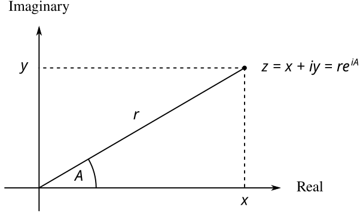

We will develop a system that performs arithmetic operations on complex numbers as a simple but unrealistic example of a program that uses generic operations. We begin by discussing two plausible representations for complex numbers as ordered pairs: rectangular form (real part and imaginary part) and polar form (magnitude and angle).[1] Section 2.4.2 will show how both representations can be made to coexist in a single system through the use of type tags and generic operations.
Like rational numbers, complex numbers are naturally represented as ordered
pairs. The set of complex numbers can be thought of as a two-dimensional
space with two orthogonal axes, the real
axis and the
imaginary
axis. (See
figure 2.30.) From this point of view,
the complex number $z=x+iy$ (where
$i^{2} =-1$) can be thought of as the point in
the plane whose real coordinate is $x$ and whose
imaginary coordinate is $y$. Addition of complex
numbers reduces in this representation to addition of coordinates:
\[
\begin{array}{lll}
\mbox{Real-part}(z_{1}+z_{2}) & = &
\mbox{Real-part}(z_{1})+\mbox{Real-part}(z_{2}) \\[1ex]
\mbox{Imaginary-part}(z_{1} +z_{2}) & = &
\mbox{Imaginary-part}(z_1)+\mbox{Imaginary-part}(z_2)
\end{array}
\]
When multiplying complex numbers, it is more natural to think in terms of representing a complex number in polar form, as a magnitude and an angle ($r$ and $A$ in figure 2.30). The product of two complex numbers is the vector obtained by stretching one complex number by the length of the other and then rotating it through the angle of the other: \[ \begin{array}{lll} \mbox{Magnitude}(z_{1}\cdot z_{2}) & = & \mbox{Magnitude}(z_{1})\cdot\mbox{Magnitude}(z_{2})\\[1ex] \mbox{Angle}(z_{1}\cdot z_{2}) & = & \mbox{Angle}(z_{1})+\mbox{Angle}(z_{2}) \end{array} \]
Thus, there are two different representations for complex numbers,
which are appropriate for different operations. Yet, from the
viewpoint of someone writing a program that uses complex numbers, the
principle of data abstraction suggests that all the operations for
manipulating complex numbers should be available regardless of which
representation is used by the computer. For example, it is often
useful to be able to find the magnitude of a complex number that is
specified by rectangular coordinates. Similarly, it is often useful
to be able to determine the real part of a complex number that is
specified by polar coordinates.

To design such a system, we can follow the same data-abstraction strategy we followed in designing the rational-number package in section 2.1.1. Assume that the operations on complex numbers are implemented in terms of four selectors: real-part, real_part, imag-part, imag_part, magnitude, magnitude, and angle. Also assume that we have two procedures functions for constructing complex numbers: make-from-real-imag make_from_real_imag returns a complex number with specified real and imaginary parts, and make-from-mag-ang make_from_mag_ang returns a complex number with specified magnitude and angle. These procedures functions have the property that, for any complex number z, both
| Original | Python |
| (make-from-real-imag (real-part z) (imag-part z)) | make_from_real_imag(real_part(z), imag_part(z)) |
| Original | Python |
| (make-from-mag-ang (magnitude z) (angle z)) | make_from_mag_ang(magnitude(z), angle(z)) |
Using these constructors and selectors, we can implement arithmetic on
complex numbers using the abstract data
specified by the
constructors and selectors, just as we did for rational numbers in
section 2.1.1. As shown in the formulas
above, we can add and subtract complex numbers in terms of real and
imaginary parts while multiplying and dividing complex numbers in terms of
magnitudes and angles:
| Original | Python |
| (define (add-complex z1 z2) (make-from-real-imag (+ (real-part z1) (real-part z2)) (+ (imag-part z1) (imag-part z2)))) (define (sub-complex z1 z2) (make-from-real-imag (- (real-part z1) (real-part z2)) (- (imag-part z1) (imag-part z2)))) (define (mul-complex z1 z2) (make-from-mag-ang (* (magnitude z1) (magnitude z2)) (+ (angle z1) (angle z2)))) (define (div-complex z1 z2) (make-from-mag-ang (/ (magnitude z1) (magnitude z2)) (- (angle z1) (angle z2)))) | def add_complex(z1, z2): return make_from_real_imag(real_part(z1) + real_part(z2), imag_part(z1) + imag_part(z2)) def sub_complex(z1, z2): return make_from_real_imag(real_part(z1) - real_part(z2), imag_part(z1) - imag_part(z2)) def mul_complex(z1, z2): return make_from_mag_ang(magnitude(z1) * magnitude(z2), angle(z1) + angle(z2)) def div_complex(z1, z2): return make_from_mag_ang(magnitude(z1) / magnitude(z2), angle(z1) - angle(z2)) |
To complete the complex-number package, we must choose a representation and
we must implement the constructors and selectors in terms of primitive
numbers and primitive
list structurelinked-list structure. There are two obvious ways to do
this: We can represent a complex number in rectangular form
as a pair (real part, imaginary part) or in polar form
as a
pair (magnitude, angle). Which shall we choose?
In order to make the different choices concrete, imagine that there are two programmers, Ben Bitdiddle and Alyssa P. Hacker, who are independently designing representations for the complex-number system. Ben chooses to represent complex numbers in rectangular form. With this choice, selecting the real and imaginary parts of a complex number is straightforward, as is constructing a complex number with given real and imaginary parts. To find the magnitude and the angle, or to construct a complex number with a given magnitude and angle, he uses the trigonometric relations \[ \begin{array}{lllllll} x & = & r\ \cos A & \quad \quad \quad & r & = & \sqrt{x^2 +y^2} \\ y & = & r\ \sin A & & A &= & \arctan (y,x) \end{array} \] which relate the real and imaginary parts ($x$, $y$) to the magnitude and the angle $(r, A)$.[2] Ben's representation is therefore given by the following selectors and constructors:
| Original | Python |
| (define (real-part z) (car z)) (define (imag-part z) (cdr z)) (define (magnitude z) (sqrt (+ (square (real-part z)) (square (imag-part z))))) (define (angle z) (atan (imag-part z) (real-part z))) (define (make-from-real-imag x y) (cons x y)) (define (make-from-mag-ang r a) (cons (* r (cos a)) (* r (sin a)))) | def real_part(z): return head(z) def imag_part(z): return tail(z) def magnitude(z): return math_sqrt(square(real_part(z)) + square(imag_part(z))) def angle(z): return math_atan2(imag_part(z), real_part(z)) def make_from_real_imag(x, y): return pair(x, y) def make_from_mag_ang(r, a): return pair(r * math_cos(a), r * math_sin(a)) |
Alyssa, in contrast, chooses to represent complex numbers in polar form. For her, selecting the magnitude and angle is straightforward, but she has to use the trigonometric relations to obtain the real and imaginary parts. Alyssa's representation is:
| Original | Python |
| (define (real-part z) (* (magnitude z) (cos (angle z)))) (define (imag-part z) (* (magnitude z) (sin (angle z)))) (define (magnitude z) (car z)) (define (angle z) (cdr z)) (define (make-from-real-imag x y) (cons (sqrt (+ (square x) (square y))) (atan y x))) (define (make-from-mag-ang r a) (cons r a)) | def real_part(z): return magnitude(z) * math_cos(angle(z)) def imag_part(z): return magnitude(z) * math_sin(angle(z)) def magnitude(z): return head(z) def angle(z): return tail(z) def make_from_real_imag(x, y): return pair(math_sqrt(square(x) + square(y)), math_atan2(y, x)) def make_from_mag_ang(r, a): return pair(r, a) |
The discipline of data abstraction ensures that the same implementation of add-complex, add_complex, sub-complex, sub_complex, mul-complex, mul_complex, and div-complex div_complex will work with either Ben's representation or Alyssa's representation.